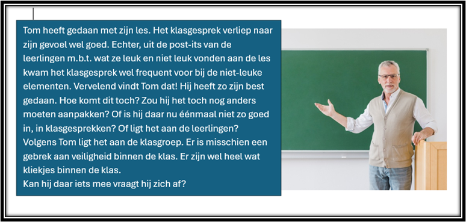
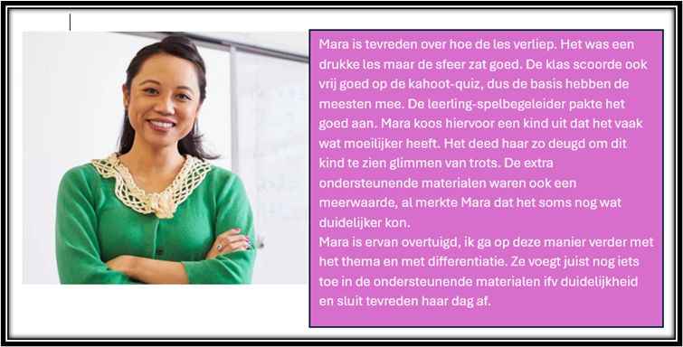
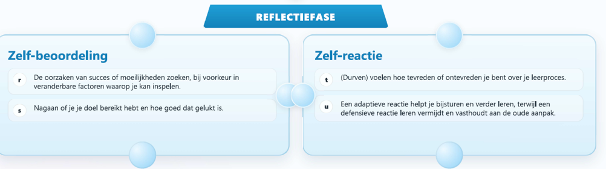
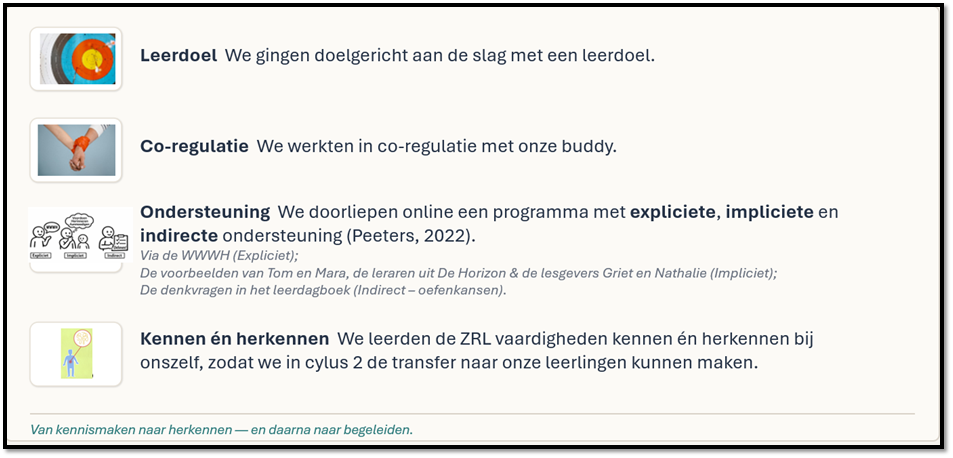
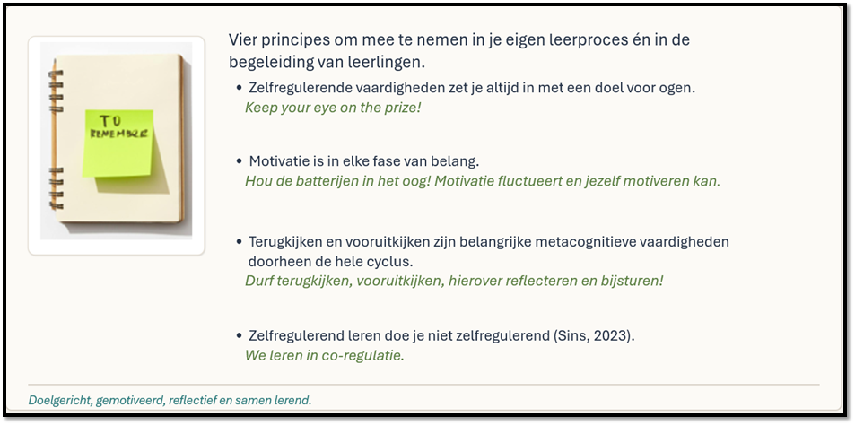

WEEK 4 – NA HET LEREN
Reflectiefase: Zelf-beoordeling en zelf-reactie
⏱ Totale tijd: max. 60 minuten
Deze week zoomen we in op de reflectiefase: terugblikken, evalueren en reageren op wat je geleerd hebt.
1. Even terugblikken – Hoe gaat het?

Vorige week:
- Stonden we al even stil bij onszelf
- Gingen we na of we op de juiste weg waren
- Of we hier iets van registratie over bijhielden
- En stuurden we tenslotte bij
Sta even stil bij volgende vragen:
- Welke bijsturingen heb je gedaan n.a.v. de reflecties van vorige week?
- Wat lukte hier goed bij? Waar liep je vast?
- Heb je iets bijgeleerd over jezelf?
- Hoe zit het op dit moment met je motivatie?
- Kan je er in vliegen of moet je jezelf eerst positief toespreken (zelfinstructie en bekrachtiging)
Ja hoor, je bent goed bezig! Dat vinden wij alvast 😊
2. Korte herhaling
Vorige week zoomden we in op zelfmonitoring en zelfregistratie onder de rubriek zelf-observatie. We bekeken hoe we onszelf en het resultaat van onze acties observeren, registreren en bijsturen. En dit alles in functie van ons doel!
Keep your eye on the price….
We herhalen deze vaardigheden door middel van een oefening (remember: actieve verwerking) en maken hierbij al even kort de transfer naar onze leerlingen.
Dit week is de vraag: Is het nu zelfmonitoring of zelfregistratie?
We bekijken of het onderscheid tussen de twee helder is.
Zelfmonitoring, zelfregistratie of geen van beiden?
Noteer je antwoord en vergelijk daarna met de oplossingen.
- Een leerling begrijpt de opdracht niet, maar werkt toch verder zonder hulp te vragen.
- Een leerling vinkt op een taakblad af: materiaal gehaald, tekst gelezen, poster klaar.
- Een leerling vult in een groepslogboek in wat hij vandaag heeft gedaan.
- Een kind merkt: “Deze oefening snap ik niet, ik sla ze even over en doe eerst de andere.”
- Een leerling merkt tijdens het groepswerk op: “Wij zijn nog niet begonnen aan de tekening, we moeten sneller werken.”
- In een groepswerk noteert niemand afspraken of deadlines.
- Een leerling houdt bij het studeren door middel van kruisjes bij wat hij nog niet goed kan.
Antwoorden
- 1. Geen van beiden , De leerling staat niet stil bij het feit dat het nodig is om goed te begrijpen wat er juist gevraagd wordt en monitort - noch registreert - dus niet.
- 2. Zelfregistratie . Deze leerling registreert zijn vooruitgang.
- 3. Zelfregistratie . De leerling houdt actief bij wat er gedaan werd.
- 4. Zelfmonitoring . Deze leerling kijkt of het lukt, en stuurt bij.
- 5. Zelfmonitoring . Deze leerling merkt op dat de tijd vooruit gaat maar de opdracht niet…
- 6. Ontbrekende zelfregistratie . Ze houden niets bij en registreren dus niets. Of ze monitoren weten we niet op basis van deze zin.
- 7. Zelfregistratie . De leerling kan straks makkelijk de vragen waarover hij twijfelt nog eens checken, door deze zelfregistratie.
3. Vooruit kijken: opzet van deze week

Je hebt vier weken gewerkt aan je leerdoel. Je plande, voerde uit, stuurde bij. Nu komt de fase die vaak wordt overgeslagen, maar die bepaalt of je écht groeit.
Reflectie is brandstof voor je volgende cyclus én voor groei! Reflectie maakt leren en gericht bijsturen mogelijk.
“Waanzin is immers steeds hetzelfde blijven doen en een ander resultaat verwachten.”
– Volgens velen een citaat van Albert Einstein, maar het blijkt fake te zijn volgens de VRT.
Wat komt er deze week aan bod?
Griet en Nathalie heten je terug welkom en nemen je mee in het opzet van de laatste week van cyclus 1.
Klik op de link om het filmpje te horen (5 minuten)
4. Zelf-beoordeling: Attributie en zelfevaluatie
A. De theorie

We bekijken expliciet - volgens de WWWH - wat deze twee zelfregulerende vaardigheden precies inhouden.
WAT?
- Zelfevaluatie: je kijkt of je je doel hebt bereikt en hoe goed dat gelukt is.
-
Attributie: je zoekt de oorzaak van je succes of moeilijkheden. Waaraan ligt het?
- Als je de oorzaak van moeilijkheden ziet in onveranderbare zaken (‘ik ben daar gewoon slecht in’) of factoren buiten jezelf (‘het ligt aan de klasgroep’) zal je minder geneigd zijn om jezelf bij te sturen en te kijken wat je nog kan ondernemen.
- Als je de oorzaak van succes altijd buiten jezelf ziet (dat was makkelijk) zal je weinig competentiegevoel opbouwen.
=> Oorzaken zoeken in veranderbare zaken of denken in termen van mogelijkheden, helpt om gericht bij te sturen.
WAAROM?
Zo krijg je zicht op je aanpak en je resultaat.
Als je goed attribueert helpt dit je om je volgende leerproces beter aan te pakken.
WANNEER?
Na het leren.
HOE?
Stel jezelf vragen als:
- Heb ik mijn doel bereikt?
- Wat ging goed?
- Wat liep minder goed?
- Hoe komt dat?
- Wat doe ik de volgende keer anders?
B. Een voorbeeld

Een voorbeeld: Tom en Mara
Ook Tom en Mara zitten in de reflectiefase. Ook voor hen is het tijd om alles op een rij te zetten.



Benieuwd wat wij vinden van de ZRL vaardigheden van Tom en Mara.
Klik op de micro en hoor onze reflecties (4 minuten).
Klik hier om onze reflecties te beluisteren
C. Aan de slag

Aan de slag met je leerdagboek
Tijd om te kijken hoe jij je traject tot nu toe evalueert.

5. Zelf-reactie: Zelftevredenheid en adaptieve/defensieve reactie
A. De theorie
We zoomen even dieper in op de vaardigheden zelftevredenheid en adaptieve/defensieve reactie.
WAT?
- Zelftevredenheid: je voelt hoe tevreden of ontevreden je bent over je leerproces.
-
Reactie: je gaat daar op een adaptieve of defensieve manier mee om.
- Adaptief: je wilt bijsturen en verder leren.
- Defensief: je vermijdt (het denken over) leren omdat het te bedreigend is en houdt vast aan je “oude” aanpak. “Deze keer zal het wel lukken”.
WAAROM?
Je gevoel na het leren beïnvloedt wat je daarna doet.
Het gevoel - alsook hoe je met negatieve gevoelens zoals teleurstelling omgaat - bepaalt of je bijstuurt, blijft oefenen of leren net gaat vermijden.
WANNEER?
Na het leren.
HOE?
- Sta stil bij je gevoel: ben ik tevreden of gefrustreerd?
- Probeer mild maar eerlijk naar jezelf te kijken.
-
Vraag je af:
- Wat kan ik hieruit leren?
- Wat kan ik verbeteren?
- Hoe pak ik het de volgende keer sterker aan?
B. Een voorbeeld
Een voorbeeld: Het lerarenteam
Herinner je je ons lerarenteam nog? Zij waren er vorige week niet bij. De nieuwe methode vroeg wat te veel van hen. Ze hadden al hun energie nodig.
Intussen zijn ze weer al wat verder en stuurden ze onderweg wat bij.
De directie plant een evaluatievergadering in om te zien hoe de leraren er vandaag in staan.
Bekijk hieronder de reacties van enkele leerkrachten m.b.t. de implementatie van de nieuwe methode. Noteer op een blaadje welke reacties adaptief zijn en welke defensief. Check daarna je antwoord via de knop:
Oefening: adaptief of defensief?
Bij Fien verliepen de eerste lessen met de nieuwe methode vrij chaotisch. De timing klopte niet, de leerlingen haakten snel af. Fien ziet hierin het bewijs dat de methode niet werkt. Waarom moesten ze toch zo nodig weer veranderen? Ze zal haar mening over die methode eens goed zeggen op de personeelsvergadering.
Luca ziet dat de vooruitgang bij de leerlingen na enkele weken niet beter is maar zelfs zwakker dan bij de oude methode. Luka denkt echter: ik heb het misschien niet goed genoeg opgebouwd. Misschien hebben de leerlingen meer modeling en begeleide inoefening nodig.
Mon vindt het moeilijk dat de leerlingen zelf zeggen dat het te verwarrend is. Dat is volgens hem toch het schoonste bewijs dat de methode niet werkt. Mon voelt veel onvrede met de verandering. Wie was hier eigenlijk voorstander van en waarom doen we dit eigenlijk? Hij weigert hiermee verder te gaan. Zijn collega Kim kreeg ook al opmerkingen van leerlingen. Zij bevroeg bij hen wat ze precies moeilijk vinden, zodat ze meer gericht kan ondersteunen.
En dan zijn er nog leerkrachten die zich onzeker voelen. Milan voelt zich heel onzeker maar houdt zichzelf voor dat hij “leergeld” aan het betalen is. Hij denkt: “ik moet het wat tijd geven, het is logisch dat het nog niet zo vlot gaat”. Ik bevraag eens bij de collega’s of zij nog tips hebben.
Anderen vinden dat moeilijker, beginnen heel hard aan zichzelf te twijfelen. Zo is er een nieuwe leerkracht die denkt: “misschien kan ik dit gewoon niet”. Zij geeft het op en gebruikt toch de oude methode, doch zwijgt hierover in alle talen. Ze ziet geen andere oplossing.
Oplossing bekijken
Defensief:
Defensieve reacties zien we bij Fien, Mon en de nieuwe leerkracht. Zich kwaad maken, weigeren de methode nog te gebruiken, in het geniep toch de oude methode gebruiken (niets veranderen) zijn allemaal voorbeelden van defensieve reacties.
Adaptief:
Adaptieve reacties zien we bij Luca, Kim en Mila. Aanpassingen doen aan de opbouw, hulp vragen, leerlingen bevragen over de specifieke moeilijkheden zijn allemaal voorbeelden van adaptieve reacties.
Doorheen het verhaal zie je daarnaast ook dat de taakwaarde (zie voorbereidingsfase, week 1) niet bij iedereen even hoog is. Niet iedereen ziet het nut van het invoeren van deze nieuwe methode. Dat speelt natuurlijk ook een rol wanneer men moet doorzetten bij moeilijkheden. De ZRL vaardigheden beïnvloeden elkaar!
C. Aan de slag
Aan de slag met je leerdagboek
Tijd om te kijken hoe tevreden jij je voelt over je leren, en welke impact dit heeft op jouw handelen.
Graag nog eens de ZRL-vaardigheden van de week op een rijtje ? Probeer de juiste ZRL-vaardigheid op de juiste zin te kleven. Scroll terug om jezelf te corrigeren.

6. Conclusie
Je hebt nu de volledige ZRL-cyclus doorlopen. Niet alleen theoretisch. Maar toegepast op jezelf. We zetten even op een rij.
Terugblik op de voorbije vier weken

Remember: enkel zaken om vast te houden!

7. Vooruitblik
Tijd om te vertragen. Tijd om op te laden. Geniet van de vakantie, thuis of buitenshuis. Na de pauze start je met een nieuwe cyclus, met meer zelfinzicht, meer scherpte en meer regie.
Tot na de vakantie!